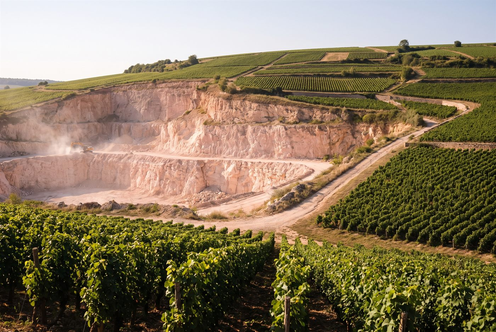

Les domaines · Côte de Nuits · Comblanchien
11
Comblanchien · Côte de Nuits
Domaine Gérard Julien
Des pinots noirs de Côte de Nuits axés sur le fruit rouge, la finesse et des tanins fondus.

Ambiance de Comblanchien
Installée à Comblanchien, juste au sud de Nuits-Saint-Georges, la famille Julien cultive la vigne depuis cinq générations, depuis les premières parcelles acquises par François-Xavier Julien. Étienne Julien conduit le domaine depuis le millésime 2012 et a fait évoluer les pratiques vers une viticulture plus respectueuse des sols, sans certification. Le cœur du vignoble est l'appellation Côte de Nuits-Villages, complétée par des parcelles à Nuits-Saint-Georges, à Aloxe-Corton et par un rare Échezeaux Grand Cru.
Blancs
- Cépage · Aligoté0,45 ha sur marne blanche et calcaire, le seul blanc de la maison.
Rouges
- Cépage · Pinot noirMarnes, limons rouges et cailloutis calcaires; environ 1 000 bouteilles par an, le sommet de la gamme.
- Cépage · Pinot noirLimons et cailloutis calcaires sur le versant nord de Nuits, le seul premier cru du domaine.
- Cépage · Pinot noirLieu-dit de 0,60 ha en sols limoneux et cailloutis calcaires, isolé en cuvée parcellaire.
- Cépage · Pinot noirAssemblage de quatre climats villages (Longecourts, Maladières, Fleurières, Charbonnières) sur 1,30 ha.
- Cépage · Pinot noirSeule appellation de Côte de Beaune du domaine, 0,60 ha au pied de la colline de Corton.
- Cépage · Pinot noirCœur du domaine avec 5,50 ha répartis sur huit climats de Comblanchien, dont Les Loges, Les Essarts et Les Retraits.
- Cépage · Pinot noirArgiles et calcaires, entrée de gamme gourmande du domaine.
Ces cuvées vous parlent ?
Demander les disponibilités